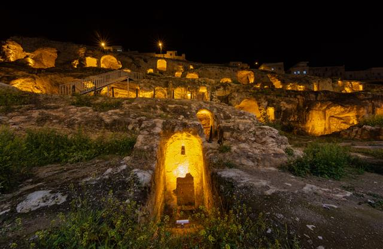

Şanlıurfa, binlerce yıllık tarihi ve zengin kültürel mirasıyla turizm destinasyonlarının başında geliyor.
Efsanelerin doğduğu, peygamberlerin izlerini taşıyan Şanlıurfa, zengin kültürel mirasıyla her adımda büyülemeye devam ediyor.
Kültürel ve tarihi açıdan benzersiz olan Şanlıurfa’da benzersiz bir tatil geçirmeniz için tüm detayları sizin için derledik.
Güneydoğu Anadolu Bölgesi’nde konumlanan ve yüzölçümü bakımından Türkiye’nin 7. büyük şehri olan Şanlıurfa, dokusu sayesinde keyifli bir gezi vadetmeyi başarıyor.
Kent, tarihsel alışkanlık sebebiyle çoğu zaman sadece Urfa olarak da anılıyor.
Bugüne dek birçok farklı medeniyete ev sahipliği yapan Urfa, dünyanın en eski tapınağı olarak bilinen Göbeklitepe’ye de ev sahipliği yapıyor.
Bunun yanı sıra Urfa, Güneydoğu Anadolu Bölgesi’nin en kalabalık şehirleri arasında sayılıyor.
Şanlıurfa kara iklimi özelliği gösterir. Yazları çok kurak ve sıcak, kışları bol yağışlı, nispeten ılıman geçmektedir. Deniz etkisinden uzak bir bölgede bulunmaktadır.
Bu özellik sıcaklık ve yağış bakımından kendisini göstermektedir.
Şanlıurfa nüfusu TÜİK tarafından 2.170.110 olarak açıklanmıştır. Açıklanan bu nüfusun erkek nüfusu 1.093.998 ve kadın nüfusu 1.076.112 olmuştur. Şanlıurfa ilinin nüfusu en büyük ilçesi Haliliye (396.656), nüfusu en küçük ilçesi Halfeti (41.662) olmuştur.
- Göbeklitepe
Şanlıurfa gezilecek yerler listesinin başlangıç noktalarından biri olan Göbeklitepe, kentin en önemli tarihi mekanı olması sebebiyle dikkat çekiyor.
Yalnızca Şanlıurfa ve Türkiye için değil, tüm dünya için oldukça önemli bir merkez olan Göbeklitepe, insanlığın bilinen en eski tapınak kompleksi olarak dünya çapında ün kazandı.
Göbeklitepe'nin en çarpıcı özelliği, yaklaşık 12 bin yıl öncesine, M.Ö. 9600'lere kadar uzanan tarihi geçmişi ve bu döneme ait kalıntıları olarak gösteriliyor. Burada bulunan dikili taşlar ve yapılar, o dönemin insanlarının inanç sistemini ve sosyal hayatlarını yansıtıyor.
Göbeklitepe, bu keşif sayesinde insanlık tarihindeki bilinen düşünceleri ve inançları sorgulamamızı sağladı.
1963 yılında bir çiftçi tarafından keşfedilen ve 1995 yılında kazı çalışmaları yapılmaya başlanan Göbeklitepe’nin Neolitik dönemde inşa edildiği düşünülüyor.
UNESCO Dünya Mirası Geçici Listesi’nde yer alan Göbeklitepe, Haliliye ilçesi içerisinde bulunuyor.
Burada, arkeolojik kazı alanlarını gezebilir, dikili taşları inceleyebilir ve o döneme ait kalıntıları yakından gözlemleyebilirsiniz.
Ayrıca, Göbeklitepe Arkeoloji Müzesi'nde bulunan eserler, ziyaretçilerin bu antik yerleşim yeri hakkında daha fazla bilgi sahibi olmasını sağlıyor. Göbeklitepe'nin etkileyici atmosferi, ziyaretçileri o zamana götürüyor.
Burada, tarih öncesi dönemlere ait izlerin üzerinde dolaşırken, insanlığın köklerine bir yolculuk yapma fırsatı bulabilirsiniz.
ÖNERİMİZ:
Göbeklitepe’ye ücretsiz olarak kalkan servislerden faydalanarak ulaşım sağlayabilirsiniz.
- Balıklıgöl
Şanlıurfa’nın en önemli turistik cazibe merkezlerinden biri olan Balıklıgöl, ziyaretçilerine eşsiz bir deneyim sunan mistik ve tarihi bir mekan olarak biliniyor.
Bu büyüleyici göl, mitolojik ve tarihi anlatılarıyla kendine has bir atmosfere sahip olması ile öne çıkıyor.
Balıklıgöl'ün en tanınmış özelliği, içinde yaşayan efsanevi balıklar dersek yanlış olmaz. Bu balıkların efsanesi, Hz. İbrahim ile ilişkili şekilde gelişti. Efsaneye göre Hz. İbrahim, ateşe atılmadan önce bu gölde günahlarını temizlemiş ve mucizevi bir şekilde ateşin zararından korunmuş.
Bu nedenle Balıklıgöl, dini açıdan büyük önem taşıyor ve ziyaretçiler burada dileklerini dile getirirken balıklara yem atıyor.
Balıklıgöl aynı zamanda tarihi bir mekan olarak da büyük değere sahip. Çevresinde yer alan tarihi yapılar, ziyaretçilere geçmişin izlerini hissettiriyor. Etrafında yer alan tarihi çeşmeler, camiler ve medreselerle birlikte mistik bir atmosfer oluşturuyor.
- Harran
Şanlıurfa’nın Suriye sınırına yakın bir ilçesi olan ve en turistik ilçelerinden biri olarak değerlendirilen Harran, merkeze 44 km uzaklıkta yer alıyor. En önemli özelliği ise dünyanın ilk bilim merkezlerinden biri olarak anılmasıdır.
Dünyada kurulan ilk üniversitenin Harran’da kurulduğu kabul ediliyor.
Dolayısıyla bu ilçe yalnızca Türkiye için değil dünya için de önem taşıyor. 12. yüzyılda kurulduğu kabul edilen Harran Üniversitesi UNESCO tarafından da tescillenmiş durumda. Harran, Kuzey Mezopotamya’nın en eski yerleşim bölgelerinden birisi olarak da kabul ediliyor.
Oldukça köklü bir geçmişe sahip olan ve günümüzde Arap kültürünün hakim olduğu ilçe, gezilmesi ve görülmesi gereken çok sayıda yere ev sahipliği yapıyor.
Bu ilçenin öne çıkan özelliklerinden biri ise Harran Evleri. Harran Evleri, binlerce yıllık bir geçmişe sahip olan geleneksel konutların benzersiz bir örneğini sunuyor. Harran Evlerinin en çarpıcı özelliği, kendine özgü mimarisi ve yapı malzemesi.
Bu evler, kerpiç adı verilen toprak bloklardan inşa ediliyor.
Kerpiçlerin dayanıklılığı ve doğal yalıtım özellikleri, Harran Evlerini sıcak yaz günlerinde serin tutuyor ve soğuk kış aylarda ise ısını koruyor.
Harran Kümbet Evleri’nde vakit geçirirken yapıları inceleyebilir, fotoğraflar çekebilir ve mimari açıdan sizlere benzersiz bir deneyim sunan evleri ziyaret ederek keyifli bir seyahat yapabilirsiniz.
ÖNERİMİZ:
Evlerin tarihini daha iyi anlamanız için bir rehber eşliğinde gezmenizi öneriyoruz.
- Halfeti
Şanlıurfa gezilecek yerler listesinde yer alan Halfeti “Kayıp Kent” ya da “Saklı Cennet” olarak da değerlendiriliyor.
Turistik bir bölge olarak değerlendirilen ve 2000 yılında Birecik Barajı’nın yapımı ile büyük bir kısmı sular altında kalan Halfeti, özellikle tarihsel dokusunu günümüzde baraj sularıyla gösteriyor.
Halfeti’nin bir kısmı sular altında kalsa da günümüzde önemli yerlere ev sahipliği yapmaya devam ediyor. Masallardan çıkmış gibi gözüken sokakları ve tarihi evleri ile ziyaretçilerini benzersiz manzaralar sunan Halfeti, geziniz esnasında bölgenin dokusunu en iyi şekilde hissetmeniz için fırsatlar sunuyor.
Huzurlu ve sakin ambiyansı, keyifli bir Urfa seyahati yapmak isteyenler için en sevilen adreslerden biri olmasını sağlıyor.
- Gümrük Hanı
Gümrük Hanı, Şanlıurfa merkezinde yer alan tarihi bir han kompleksi olarak biliniyor. Binlerce yıllık bir geçmişi olan bu han, tarih boyunca önemli bir ticaret merkezi olarak hizmet vermiş.
Gümrük Hanı, hem mimarisiyle hem de tarihi dokusuyla ziyaretçilerini büyülüyor.
Gümrük Hanının en dikkat çekici özelliği, Selçuklu dönemine ait mimarisi ve yapı malzemesi. Hanın dış cephesinde kullanılan kesme taşlar ve süslemeler, o dönemin estetik anlayışını yansıtıyor. Hanın içinde ise geniş avlular, revaklar ve odalar yer alıyor.
Gümrük Hanı, tarih boyunca farklı kültürlerin etkisi altında kalmış bir yapı olması ile ünlü. Bu nedenle, hanın mimarisinde çeşitli etkiler görülüyor.
Gümrük Hanı, günümüzde turistler ve ziyaretçiler için önemli bir cazibe merkezi haline geldi. Hanın restore edilen bölümleri, ziyaretçilere tarihi bir atmosfer sunuyor. Ayrıca hanın içinde yer alan el sanatları atölyeleri ve hediyelik eşya dükkanları, ziyaretçilere yöresel ürünlerin satın alınabileceği bir ortam sağlıyor.
ÖNERİMİZ:
Han içerisinde hizmet veren menengiç kahvecilerine uğramanızı ve bu lezzeti tatmanızı öneriyoruz.
- Şanlıurfa Arkeoloji ve Mozaik Müzesi
Kent merkezinde bulunduğu için seyahatiniz esnasında kolaylıkla ulaşabileceğiniz Şanlıurfa Arkeoloji ve Mozaik Müzesi, ziyaretçilere Şanlıurfa’nın tarihi eserleri konusunda benzersiz bilgiler veriyor.
Burada ziyaretçiler, bölgenin eski uygarlıklarının izlerini takip edebilir ve geçmişin gizemini keşfedebilirler. Müze, aynı zamanda eğitim programları, seminerler ve özel etkinlikler gibi birçok etkinliğe de ev sahipliği yapıyor. Bu etkinlikler, ziyaretçilerin arkeoloji ve tarih konularında daha fazla bilgi edinmelerini sağlıyor.
Ayrıca müzenin içinde yer alan kafe ve hediyelik eşya dükkanı, ziyaretçilerin dinlenme ve alışveriş yapma imkanını bir araya getiriyor.
- Kızılkoyun Mağaraları
Şanlıurfa’nın tarihi ve kültürel zenginliklerinden biri olan Kızılkoyun Mağaraları, ziyaretçilerine unutulmaz bir deneyim sunuyor. Bu mağaralar, Şanlıurfa Müze Kompleksinin karşı tarafında yer alıyor.

Kızılkoyun Mağaraları, Roma ve Bizans dönemine ait yer aldığı bölge yaklaşık 2 bin yıla dayanıyor. Edessa Krallığı döneminde kullanılan yer krallık ailesinin fertlerin olduğu kaya mezarları. Kızılkoyun Nekropolü’nde kaya mezarları ve kaya mezarlarının içinde 2 adet Roma Dönemi heykel ve 1 adet kireç taşı lahit bulunuyor.
- Aynzeliha Gölü
Şanlıurfa’nın merkezinde, Balıklıgöl bölgesinde konumlanan Aynzeliha Gölü, Balıklıgöl’den daha küçük bir göl olmasına rağmen oldukça büyük bir ilgi görüyor. Gölün hemen arka tarafında bulunan Şanlıurfa Kalesi ise, tek bir gün içerisinde şehre dair pek çok farklı turistik lokasyona seyahat etmeyi mümkün hale getiriyor.
150 m² alana yayılan bu gölün güzelliği sayesinde çok seveceğiniz fotoğraflar çekebilirsiniz. Birçok efsaneye konu olan ve turistler tarafından yoğun bir ilgi gören Aynzeliha Gölü, etrafında çay ve kahve içebileceğiniz işletmelere de yer veriyor.
Bu sebeple keyifli bir seyahat için en sevilen seçeneklerden biri oluyor.
- Haleplibahçe Mozaik Müzesi
Şanlıurfa'nın derin tarihi ve kültürel hazinelerinden biri olan Haleplibahçe Mozaik Müzesi, ziyaretçilerine unutulmaz bir keşif fırsatı sunuyor. Bu müze, Türkiye'nin en geniş alanlardan birine yayılan, 6.000 metrekarelik bir alana ve 82 metrelik çapa sahip olan sütunsuz en büyük yapısı olma özelliği bulunuyor.
Müzede, Haleplibahçe'de keşfedilen mozaikler, bulundukları orjinal yerlerinde sergileniyor.
Şanlıurfa, tarihi, kültürel ve gastronomik açıdan zengin bir şehirdir. Mezopotamya'nın en eski yerleşim bölgelerinden biri olan Şanlıurfa, tarih boyunca birçok medeniyete ev sahipliği yaptığı için, nesilden nesile aktarılan zengin yemekleri ile bilinir.
Lezzetli yemekleri ile ön plana çıkan Urfa mutfağında, özellikle çorba ve et yemeklerinin yeri bir başkadır. Bu lezzetlerinin birkaçını sizin için aşağıda sıraladık.
- Lebeni Çorbası
Haşlanmış nohut, pirinç ve yoğurt ile hazırlanan lebeniye çorbası, küçük küçük köftelerin çorbaya eklenmesiyle hazırlanır. Özellikle akşam yemeklerinde tercih edilen bu çorba, naneli sos ile zenginleştirilir.
- Urfa Kebabı
Şanlıurfa yemekleri denildiğinde ilk akla gelen lezzet, Urfa kebabıdır. Kıyma, kuyruk yağı, soğan ve tuz ile hazırlanan Urfa kebabı, şişlere geçirilir ve ağır ağır pişirilir. Ardından bulgur pilavı ve közlenmiş sebzelerle birlikte sunulur.
Pek çoğumuzun adına da tadına da aşina olduğu Urfa kebabını bir de yerinde yiyin deriz. Emin olun ilk ısırıktan sonra ben bugüne kadar Urfa kebap yememişim diyeceksiniz.
- Etsiz Çiğ Köfte
Şanlıurfa ve Adıyaman'ın en sevilen tariflerinden biri olan çiğ köfte, Urfa mutfağında et kullanmadan hazırlanır. Yavaş yavaş sabırla yoğurulur. Yumurtalı olanını yaparlar ki o da tadından yenmez.
- Bostana
Özellikle yaz aylarında sofralardan eksik olmayan bol domatesli sulu efsane bir lezzet olan bostana salatasını kaşıklamaya doyamayabilirsiniz. Genellikle kebap yemeklerinin yanında sunulur.
- Ağzı Açık
En kıtırından el açması hamur üzerinde özel baharat karışımları ile tatlandırılmış nefis bir kıymalı harç. Afyon yöresinde de bulunan bu yemekte diğer yörelerin aksine sirke kullanılmadan yapılıyor.
Görüntüsüne bakıldığında lahmacunla pide arası bir lezzet gibi dursa da ağzı açık daha ilk ısırıkta farkını ortaya koyuyor.
Şanlıurfa’ya giderseniz en kıtırından bir ağzı açık yanına da bol köpüklü bir ayran ile kendinize mini bir ziyafet çekmeden dönmemenizi öneririz.
- Şıllık Tatlısı
Şanlıurfa mutfağında tatlı denildiğinde ilk akla gelen, şıllık tatlısıdır. Un, ceviz ve nişasta ile hazırlanan hamur, kare şeklinde dilimlenir. Şerbetle zenginleştirdikten sonra servis edilir.
Siz de farklı lezzetler denemeyi seviyorsanız bir akşam üzeri güzel bir şıllık tatlısı ve taze demlenmiş çay ile yorgunluk molası verebilirsiniz.